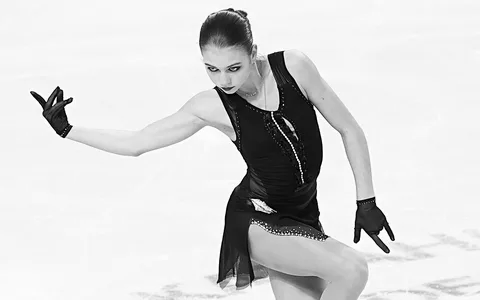
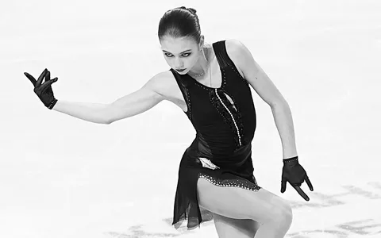
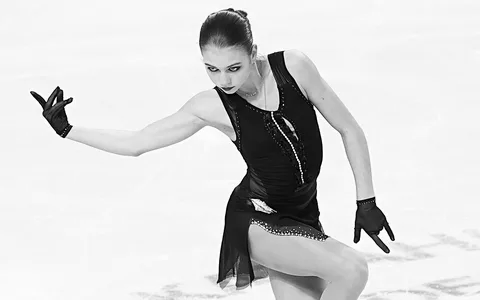
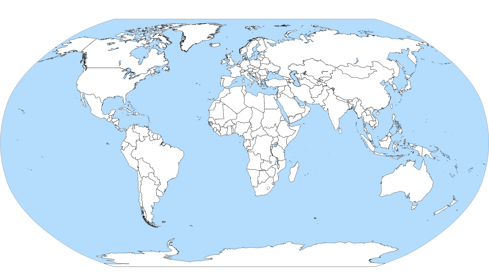
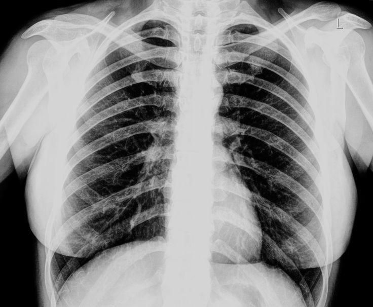
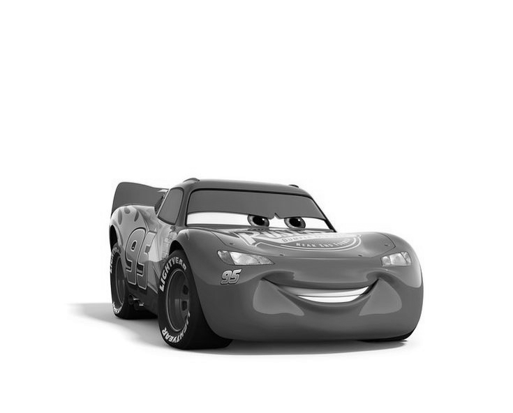
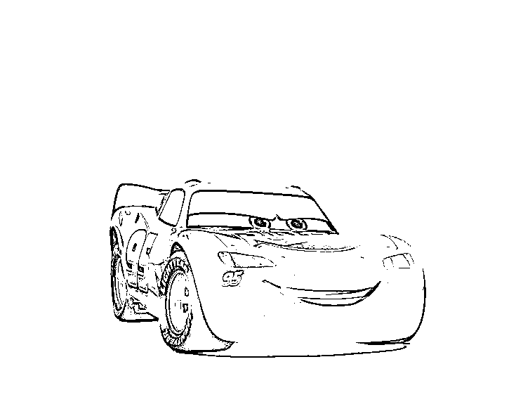
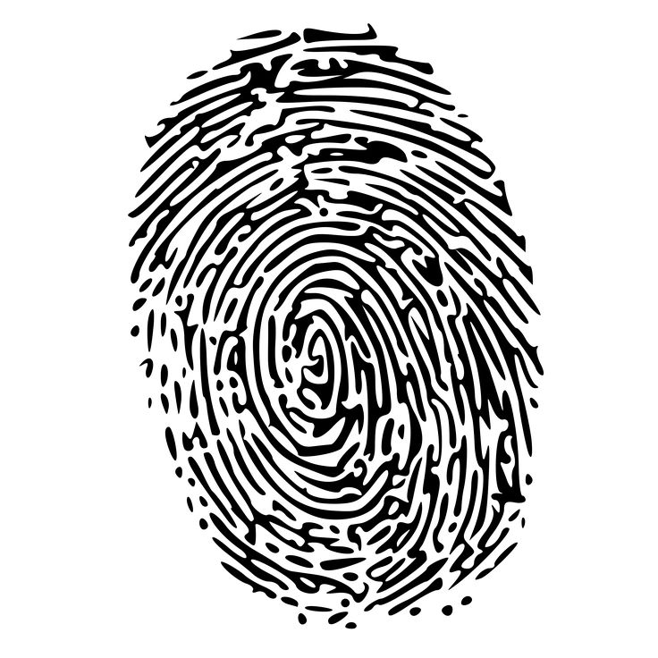
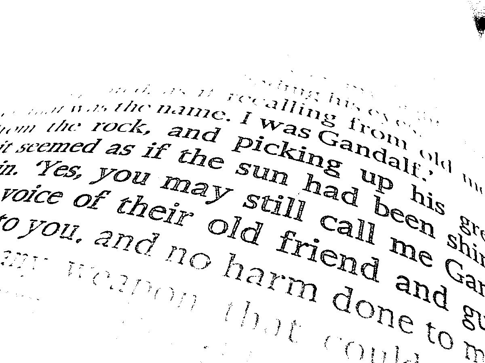

Полутоновое изображение

Полутоновое изображение
Исходное изображение Полутоновое изображение

| ##### 2 Приведение полутонового изображения к монохромному методом пороговой обработки #### Контурная карта Оригинальное изображение  |
|---|
#### Рентгеновский снимок Оригинальное изображение  |
| Полутоновое изображение  |
Монохромное изображение  |
Оригинальное изображение 
Полутоновое изображение 
Монохромное изображение 
| ##### Фотография Оригинальное изображение |
|---|
| ##### Отпечаток пальца Оригинальное изображение  |
Полутоновое изображение  |
Монохромное изображение  |
Оригинальное изображение 
Полутоновое изображение 
Монохромное изображение 